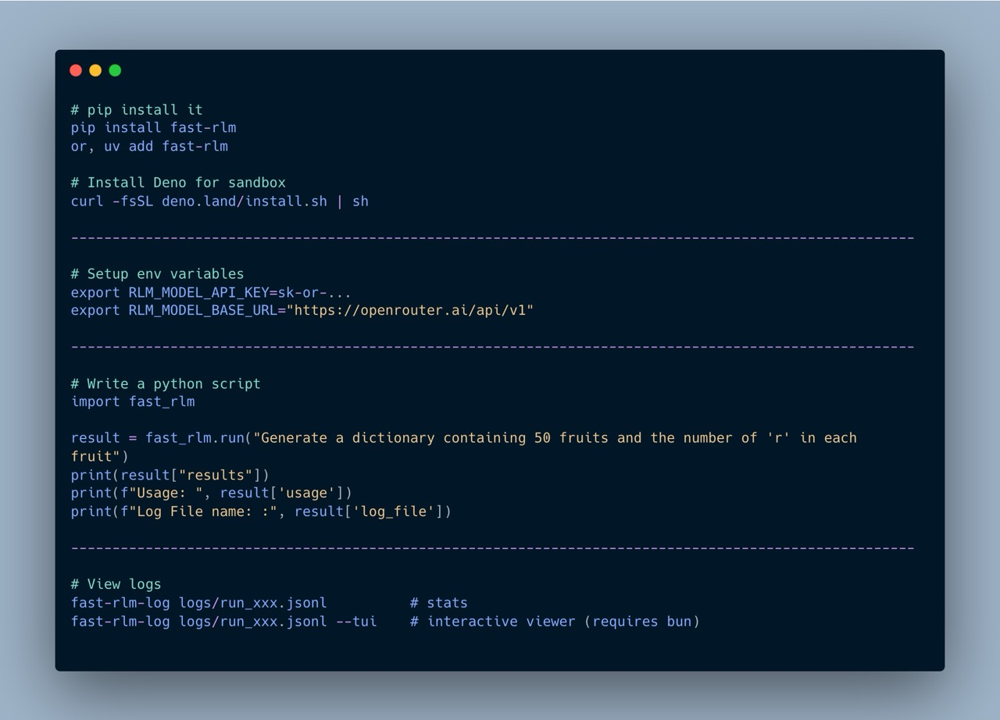

Quick Start

Basic usage
import fast_rlm
from fast_rlm import RLMConfig
# primary_agent is REQUIRED — there is no default model.
config = RLMConfig(primary_agent="z-ai/glm-5")
result = fast_rlm.run("Generate 50 fruits and count number of r", config=config)
print(result["results"])
print(result["usage"])
primary_agent is required
There is no default model. Every run() needs a config that sets primary_agent (e.g. RLMConfig(primary_agent="...")); sub_agent is optional and falls back to primary_agent. The shorter examples below omit config= for brevity — pass the config above to run them.
The returned dict contains:
{
"results": ..., # the agent's final answer
"log_file": "...", # path to the JSONL log
"usage": {
"prompt_tokens": 12345,
"completion_tokens": 678,
"total_tokens": 13023,
"cached_tokens": 5000,
"reasoning_tokens": 200,
"cost": 0.0342
}
}
From the command line
The same engine ships as a fast-rlm CLI — a second way to run things, handy for
one-off queries and shell pipelines.
# A plain prompt
fast-rlm "Generate 50 fruits and count number of r" --primary-agent z-ai/glm-5
# Feed a file as the context. Parsed by extension:
# .json / .yaml / .yml -> dict / list .jsonl / .ndjson -> list[dict]
# anything else (.csv, .tsv, .xml, .toml, .txt, ...) -> raw text the model parses
# itself; its extension is noted so it knows the format (the REPL has the
# Python 3.13 stdlib — csv, xml.etree, tomllib, ... — but no pandas/yaml).
# The positional prompt becomes the instruction (it goes into the system prompt).
# For a dict input with no "instruction" key, the prompt is also injected into it.
fast-rlm "Aggregate the reviews into a verdict" --input-file reviews.json \
--primary-agent z-ai/glm-5
# -q prints only the result (clean for piping); knobs mirror RLMConfig fields:
fast-rlm "..." --primary-agent acp:opencode --max-depth 2 --max-global-calls 50 -q
Common flags: --primary-agent, --sub-agent, --input-file, --max-depth,
--max-calls, --max-global-calls, --acp-agents, --prefix, --vertex,
-q/--quiet. (There's no separate --instruction flag — the positional prompt
is the instruction.) Run fast-rlm --help for the full list.
The same file loading is available from Python — run() takes an input_file
argument in place of query:
Arbitrarily long context
The key idea behind RLMs is that the prompt can be arbitrarily long — far beyond any model's context window. The agent explores it programmatically through the REPL rather than trying to fit it all into a single call.
import fast_rlm
transcripts = open("lex_fridman_all_transcripts.txt").read() # millions of tokens
result = fast_rlm.run(
"Here are the transcripts of all Lex Fridman podcasts. "
"Summarize what the first 5 Machine Learning guests had to say about AGI.\n\n"
+ transcripts
)
print(result["results"])
The agent will write code to search, filter, and chunk the transcripts on its own — no manual splitting required.
Structured input & output
You can pass a dict as the query and ask for a typed result back via output_schema. The agent receives the dict as a real Python dict (no string parsing on its first turn), and its FINAL value is validated against the schema before being returned.
import fast_rlm
from pydantic import BaseModel
class Verdict(BaseModel):
movie: str
average_score: float
consensus: str
result = fast_rlm.run(
{
"task": "Aggregate the reviews into a single verdict.",
"movie": "The Trail of Pixels",
"reviews": [
{"name": "Asha", "score": 8, "text": "Tight pacing..."},
{"name": "Bo", "score": 6, "text": "Beautiful but thin..."},
{"name": "Cy", "score": 9, "text": "Instant favorite..."},
],
},
output_schema=Verdict,
)
verdict = Verdict.model_validate(result["results"])
Structured input
When query is a dict, the agent's initial probe prints a flat top-level schema (keys + type + length + truncated preview per key) instead of dumping the whole context as a string. The agent can index context["reviews"] on its first real turn — no json.loads, no slicing.
Structured output
output_schema accepts:
| Form | Example |
|---|---|
| Pydantic model class | output_schema=MyModel |
| Pydantic generic | output_schema=list[MyModel] |
| Python primitive | output_schema=int (also str, float, bool, list, dict) |
| Raw JSON Schema dict | output_schema={"type": "array", "items": {"type": "string"}} |
The schema is shown to the agent at step 0 under Required output schema for FINAL (JSON Schema):. After every FINAL(...) call the value is validated. On failure the agent receives the schema and the specific validation errors (path + message) and may retry within its remaining call budget. Pydantic is an optional dependency — only required if you pass a Pydantic class or a generic like list[MyModel].
JSON-Schema-isms to remember
{"type": "integer"}accepts whole-valued floats like42.0(standard JSON-Schema behavior; JSON has no int/float distinction).{"type": "number"}accepts integers.{"type": "boolean"}rejects1/0— booleans are not integers in JSON.
Schemas for subagents
Inside the REPL the agent can require a subagent's output shape by passing a JSON Schema dict as the second argument to llm_query:
schema = {"type": "array", "items": {"type": "string"}}
fruits = await llm_query("Generate 25 fruit names.", schema)
The child subagent enforces the schema the same way. This removes parsing on the parent's side and forces the child to produce the exact shape requested.
With configuration
from fast_rlm import run, RLMConfig
config = RLMConfig.default()
config.primary_agent = "minimax/minimax-m2.5"
config.sub_agent = "minimax/minimax-m2.5"
config.max_depth = 5
config.max_money_spent = 2.0
result = run(
"Count the r's in 50 fruit names",
prefix="r_count",
config=config,
)
Parameters
| Parameter | Type | Default | Description |
|---|---|---|---|
query |
str or dict |
(required) | The question / context to process. A dict triggers the structured input probe. |
prefix |
str |
None |
Log filename prefix (e.g. "r_count" → r_count_2026-02-23T...) |
config |
RLMConfig or dict |
None |
Config overrides (see Configuration) |
verbose |
bool |
True |
Stream engine output to terminal |
output_schema |
Pydantic class / type / JSON Schema dict | None |
If set, the agent's FINAL value is validated before being returned. |
Quiet mode
To suppress all terminal output and just get the result: